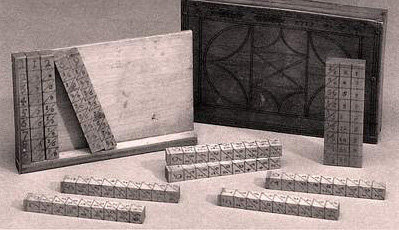

Der schottische Baron John Napier erfand und führte den Logarithmus ein, der besonders die Berechnung der Sinusfunktion wesentlich erleichterte. Dies entsprang einem dringenden Bedürfnis der Praxis, vor allem der Seefahrt. Bekannt sind heute seine sog. Neper-Stäbe oder Napier-bones. Die grundlegenden Funktionen sind in dem Werk "Rabdologiae" erläutert. Mit den Stäben konnte er die Multiplikation auf einfache Additionen zurückführen. Sie waren aber auch eine Hilfe bei der Division, und sogar Potenzen und Quadratwurzeln konnten berechnet werden.